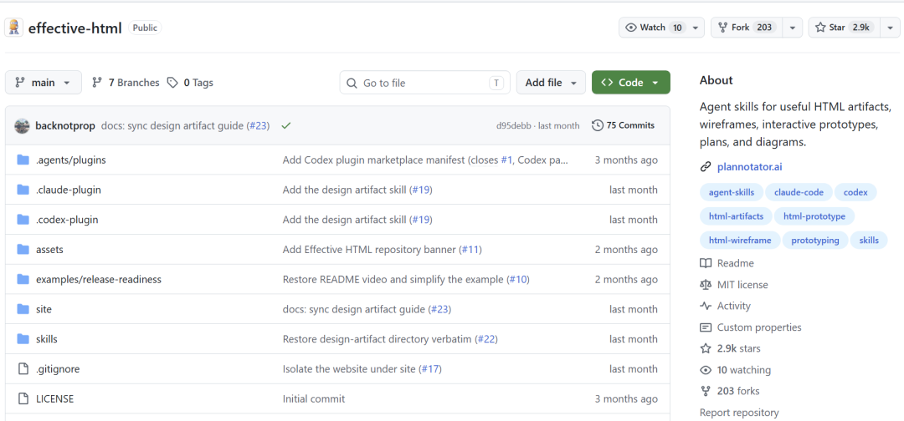
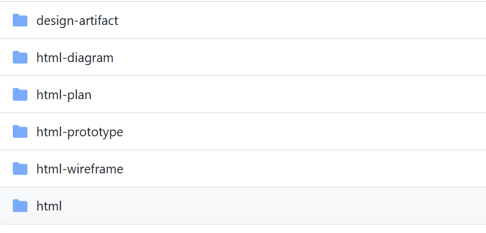
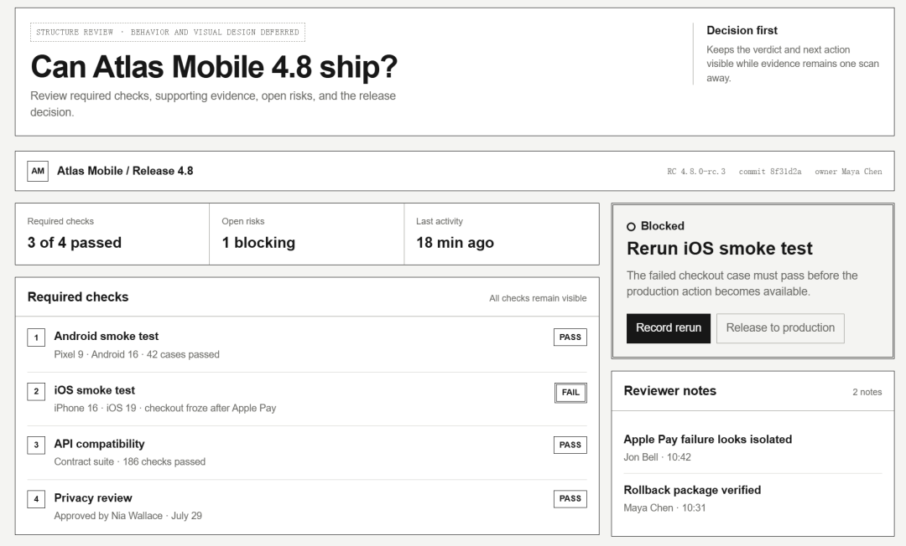
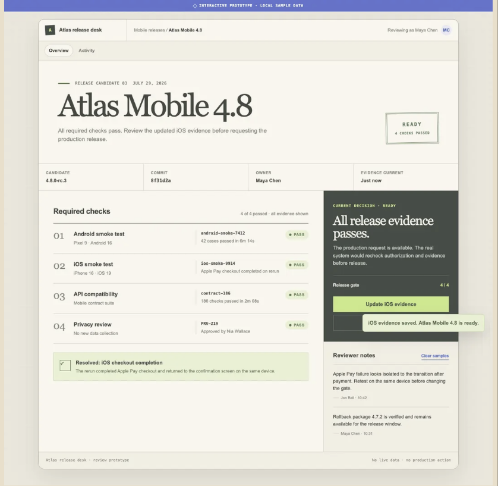
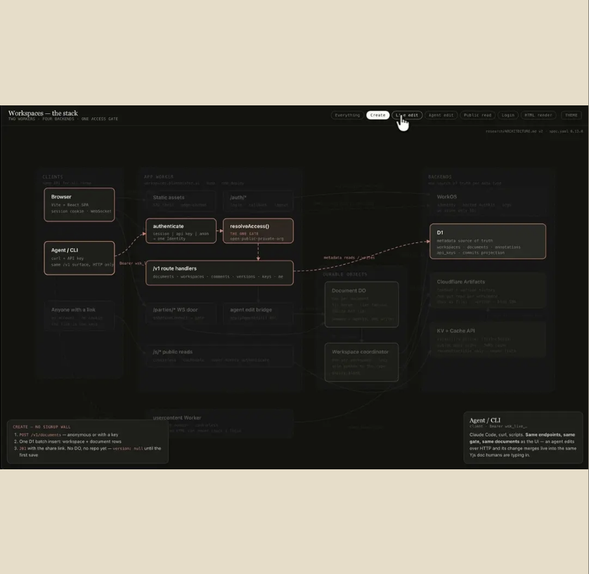
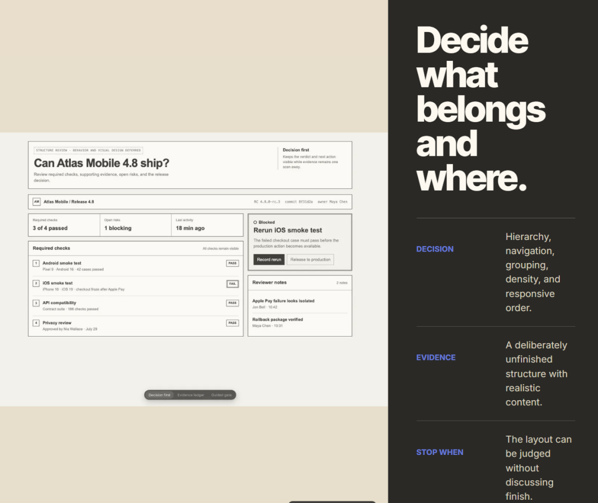
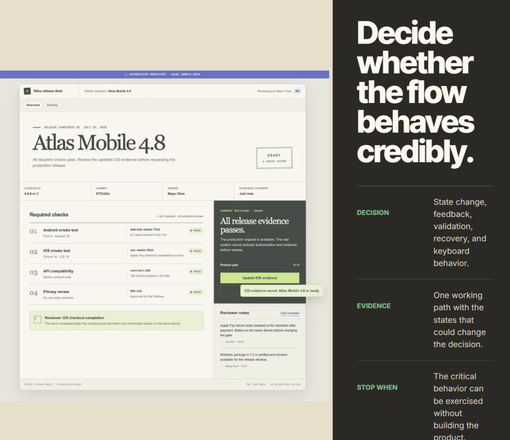
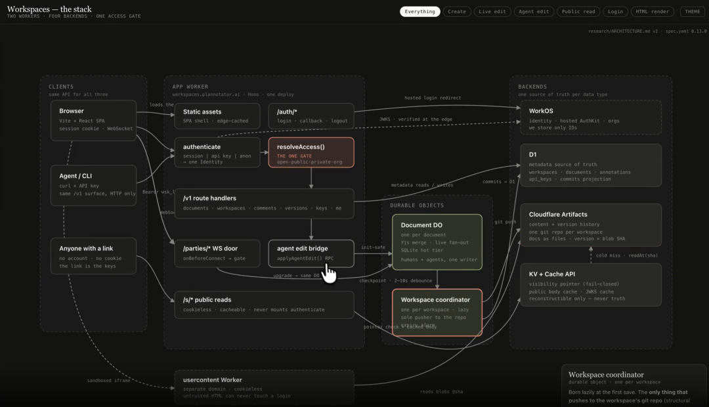

现在让Codex 做网页已经很快了。
给出一个需求，几分钟就可以生成一份HTML。
但是用多了就会发现，代码出来得快，并不等于页面就做好了。
你只是想先看看布局，它已经开始加渐变、阴影和动画。让它画一张架构图，又很容易变成几个方框加箭头。
做交互页面也是一样。
正常状态有了，加载、报错、提交失败这些真正用起来会碰到的情况，可能还得自己一条条提醒。
最近我在 GitHub 上看到一个项目，正好管这些事情。
它叫 Effective HTML。
目前项目已经接近3000个Star。

简单来说，它就是一套给 Coding Agent 用的 HTML Skills。
装到 Claude、Codex 这类工具里以后，做页面之前先判断该怎么做，完成以后还要自己检查一遍。
我也会让Agent画流程图、做些小页面。
现在让我比较头疼的已经不是代码写不出来，而是第一版看着挺快，后面又得不断告诉它这里改一下，那里再补一个状态。
Effective HTML 补的就是这部分。
先不要急着写页面
它有六个 Skill。

最外层的 html 用来做任务判断。
比如你说：
帮我设计一个设备管理后台。
它不会拿到这句话就直接开始堆 HTML 和 CSS。
还没有确定页面结构的情况下，就先用html-wireframe。

已经有明确的结构了，要做一个可以点击操作的页面，就交给 html-prototype。

要展示系统架构、业务流程或调用关系的时候就用 html-diagram。

另外还有html-plan负责计划，design-artifact负责视觉。
这样拆开以后，Agent 每一步要做到什么程度就比较清楚了。
平时说一句“做后台”，最怕的就是它把整个页面都做完了。
等我发现左边菜单不该这么放，或者信息层级不对，后面的样式和交互也得跟着一起改。
先拦住这一步，就会省事很多。
页面没定，先画个线框
html-wireframe 做的事情很简单，就是把页面的骨架先搭起来。
设备管理后台。
左边是设备列表，右边是运行状态，下面有报警和实时数据。
这时它不会急于做出漂亮的造型。
主要就是灰度、边框和简单的区块，品牌色、阴影、渐变等等先放一放。

现在只看结构。
设备列表到底放左边还是顶部。
报警应该先看到，还是实时数据更重要。
主要按钮放在哪里顺手。
到了手机上，这几个区域又该怎么排。
如果结构不确定的话，可以同时做几套方案，在一个HTML里面进行比较。
我自己反倒愿意先看这种简单版本。
一旦页面做得过于漂亮，就容易陷入对颜色、图标等细节的纠结之中。骨架确定之后，后面换主题、调样式就容易多了。
接着把页面做活
线框已经没有问题了，然后进入html-prototype。
这样就可以把静态页面变成可以操作的原型了。

比如登录页，密码输错要给出提示，提交的时候要显示加载状态，成功和失败都要有相应的反馈。
弹窗、键盘操作以及手机端适配等细节，它也会一并进行检查。
平时用 Agent 做页面，第二轮修改往往都耗在这些地方。Effective HTML 把要求提前写进 Skill，就不用每次再提醒一遍。
画图也不能上来就堆方框
我的文章里经常用到流程图，因此对 html-diagram 也十分关注。
它开始画之前，会先看这张图到底要讲什么。
服务器、数据库、网关之间怎么连接，可以按拓扑关系来画。
一次请求先到哪里、再经过哪个服务，适合画时序图。
业务怎么一步一步地往下走，就用流程图。
如果重点是设备从运行到报警，再到报警恢复到正常状态，那么就比较适合用状态图来表示。
确定了形式之后，再用 HTML、CSS、SVG 或 Canvas 来实现。

这一点挺实用。
我自己配图最怕的就是框很多、线很多，看起来像那么回事，读者看完还是不知道先看哪里。
不需要画得非常复杂，只要把关系说明白就可以了。
AI 常见的页面风格，它也管
design-artifact 主要负责页面的视觉部分。
告诉Agent不要使用一些常见的AI风格，比如紫蓝渐变、满屏圆角卡片、黑底荧光色、各种不需要的动画。
如果项目已经有自己的一套设计规范，就继续沿用；没有的话就根据页面用途来决定字体、颜色和布局。
我平时看这类页面比较多，最怕换个项目还是用同一套模板。页面不需要非常惊艳，但是要和项目本身相匹配。
安装方法
安装也十分简单，想要一次把6个技能都装上，直接运行：
npx skills add plannotator/effective-html
如果平时主要做交互页面的话，可以只安装 html-prototype：
npx skills add plannotator/effective-html --skill html-prototype
Codex 用户直接通过插件来安装：
codex plugin marketplace add plannotator/effective-html
codex plugin add plannotator-effective-html@effective-html
安装好之后就可以直接让Agent按照这些规则来写页面了。
写在最后
Effective HTML 把做页面的流程提前定好了，用Agent来写页面可以少走很多弯路。
如果你经常用Codex来写页面的话，可以安装一下试一试。
项目地址：https://github.com/plannotator/effective-html
平时我会持续地分享一些有趣的开源项目，有兴趣的朋友可以关注一下。
可以回复关键词聊天，找到你想要的项目。